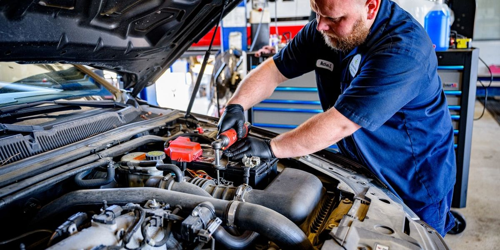

Chaque mois, 64 véhicules hybrides et électriques sont refusés à la porte

Rodaj Oto Servis Automobile · Adana · 42 salariés · 3 agences, 1 200 véhicules par moisLes mécaniciens n'ont pas de formation haute tension et ne touchent pas à ces véhicules. Le nombre de véhicules refusés a triplé en six mois.
Au lieu d'équiper les trois agences à la fois, elle a fait de Merkez l'agence spécialisée et formé deux mécaniciens. Le nombre de véhicules refusés est passé de 64 à 9 par mois.
Que s’est-il passé ?
Dans les trois agences d'Rodaj Oto Servis, on refuse à la porte les véhicules hybrides et électriques. Ils étaient 22 par mois en avril, ils sont 64 en septembre. L'ordre de réparation moyen étant de 6 500 TL, 416 000 TL de travail partent chaque mois vers d'autres garages. Une partie des clients refusés emmènent désormais aussi ailleurs la voiture à essence qu'ils ont à la maison.
Le directeur général Ozan Gündoğdu veut équiper les trois agences à la fois. Il faut 1,35 million de TL pour les outils isolés, les appareils de diagnostic et les zones de travail séparées, et 38 000 TL par personne pour la formation haute tension de cinq jours de quatre mécaniciens ; au total, environ 1,5 million de TL.
Le fondateur Cemal Gündoğdu s'y oppose : « Nous sommes des motoristes. Ces voitures, c'est l'affaire du service agréé ; tant que leur garantie n'est pas terminée, elles ne viendront pas chez nous. » La réserve du chef d'atelier Şükrü Bayram est différente : les mécaniciens ont peur de la haute tension, et celui qui reçoit une formation peut, un mois plus tard, partir là où on le paie davantage.
En chiffres
Qu’a fait Rodaj Oto Servis ?
L'examen des relevés de l'accueil a montré que 41 des 64 véhicules refusés étaient venus pour des travaux sans rapport avec la haute tension, comme les freins, les pneus, la climatisation et l'entretien périodique. Tous les mécaniciens ont suivi une formation de base d'une journée sur la sécurité, et ces travaux ont commencé à être acceptés dans les trois agences.
Un pont a été réservé à l'agence Merkez ; l'équipement a coûté 620 000 TL au lieu de 1,35 million de TL. Deux mécaniciens volontaires ont suivi la formation de cinq jours pour 76 000 TL, se sont engagés à rester deux ans et sont passés au salaire de mécanicien spécialiste. L'investissement total s'est élevé à 696 000 TL. Trois mois plus tard, le garage accueille 58 véhicules hybrides et électriques par mois et réalise 377 000 TL de chiffre d'affaires supplémentaire par mois ; les véhicules refusés sont tombés à 9.
Que faire dans une situation semblable, pas à pas
1Les premières 24 heures
- Demandez à l'accueil pourquoi sont venus les 64 véhicules refusés. Un véhicule venu pour les freins, les pneus, la climatisation ou le train roulant n'est pas la même chose qu'un véhicule venu pour une panne de batterie.
- Parlez aux mécaniciens : d'où vient la peur ? Un mécanicien qui ne sait pas quelle partie du véhicule il peut toucher, et dans quelles conditions, ne touche, à juste titre, à rien.
2Cette semaine
- Pour pouvoir accepter les travaux sans rapport avec la haute tension, faites suivre à tous les mécaniciens une formation de base d'une journée sur la sécurité : câbles orange, coupe-circuit de service, levage du véhicule en sécurité.
- N'équipez pas les trois agences à la fois. Faites d'une seule agence l'agence spécialisée ; installez-y l'équipement, et que les deux autres lui orientent les travaux en haute tension.
- Choisissez deux mécaniciens volontaires pour la formation de cinq jours et faites-leur signer un engagement de rester deux ans en contrepartie du coût de la formation. Donnez aussi la contrepartie de l'engagement : le salaire de mécanicien spécialiste.
- Appelez les clients que vous avez refusés. Si les numéros des quelque 245 propriétaires de véhicules renvoyés à la porte en six mois sont enregistrés à l'accueil, cette liste est la publicité la moins chère.
3Solution durable
- Formez chaque année au moins un mécanicien de plus ; si le savoir reste chez une seule personne, l'investissement s'en va le jour où elle part.
- Préparez un forfait d'entretien pour les propriétaires de véhicules hybrides dont la garantie est terminée ; soyez la première étape du client qui sort du service agréé.
- Enregistrez chaque mois le nombre de véhicules refusés. Le travail perdu ne devient un argument d'investissement que s'il est compté.
La leçonLe client que vous refusez à la porte emporte non seulement ce véhicule, mais aussi l'autre, celui de la maison.
3 commentaires
-
MEMustafa EroğluMécanicien, formé à la haute tension
Un engagement de deux ans tient sur le papier, pas dans le cœur. Ce qui m'a retenu à mon poste, c'est qu'à la deuxième année on m'a confié la formation des apprentis qui arrivaient et la responsabilité de ce secteur. Donnez un titre au mécanicien, pas un billet à ordre.
Şükrü Bayram Rodaj Oto Servis · Chef d'atelier, mécanicien en chef AdoptéTrès juste. À partir de janvier, l'un de nos deux mécaniciens devient responsable du secteur hybride et électrique ; c'est lui qui formera les prochains mécaniciens.
Traduit du turc · -
SBSongül BilgiPropriétaire d'un véhicule hybride
Je fais partie de ceux qu'on a refusés. J'étais venue pour un changement de pneus, on m'a dit « nous ne nous occupons pas de cette voiture ». Personne ne m'a dit « ceci, nous le faisons, cela, nous ne pouvons pas ». Le problème, avant la formation, c'était la phrase à la porte.
Ozan Gündoğdu Rodaj Oto Servis · Directeur général Apprécié par l’entrepriseC'est douloureux à lire, mais c'est vrai. Nous avons perdu non à cause du manque d'équipement, mais à cause de cette phrase. Nous vous appellerons cette semaine.
Traduit du turc · -
KUKenan UysalConseiller après-vente automobile
Vous n'êtes pas obligés de faire cet investissement seuls. Trois ou quatre garages indépendants de la ville peuvent s'associer pour monter un atelier haute tension commun ; le travail sur batterie est rare mais l'appareillage coûte cher, ce qui pèse sur un seul garage.
Traduit du turc ·
#formation#véhicule électrique#décision d'investissement#mécanicien